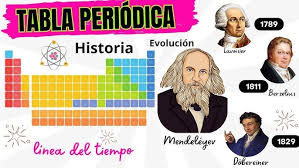
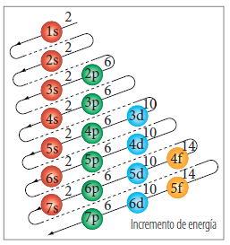
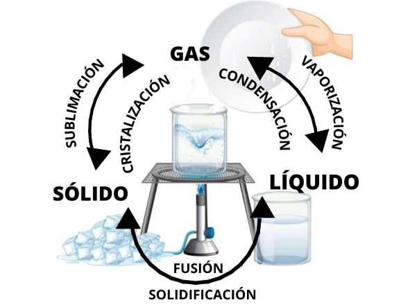
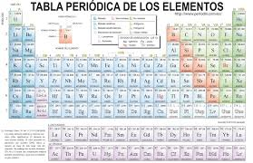

La historia de la tabla periódica
La tabla periódica, tal como la conocemos hoy, es el resultado de un proceso evolutivo que comenzó con la organización de los elementos químicos por sus propiedades. El químico ruso Dmitri Mendeleev, en 1869, fue pionero al ordenar los elementos conocidos hasta entonces, dejando espacios vacíos para elementos que aún no habían sido descubiertos, prediciendo sus propiedades. Posteriormente, Henry Moseley, en 1913, reorganizó la tabla basándose en el número atómico (carga nuclear) en lugar del peso atómico, lo que resolvió inconsistencias y llevó a la forma moderna de la tabla periódica.
Johann Wolfgang Döbereiner (1820s): Observó que algunos elementos se agrupaban en tríos con propiedades químicas similares, a los que llamó "tríadas". Por ejemplo, la tríada del cloro, el bromo y el yodo.
Otros químicos (mediados del siglo XIX): Experimentaron con clasificaciones basadas en masas atómicas y propiedades, pero sin un sistema coherente.
Henry Moseley (1913): Determino el número atómico de los elementos, reorganizando la tabla periódica de acuerdo con este nuevo parámetro, lo que resolvió algunas inconsistencias.
Estructura actual:La tabla periódica moderna se organiza en filas (periodos) y columnas (grupos), donde los elementos con propiedades similares se encuentran en el mismo grupo.

Configuración Electrónica
La configuración electrónica describe la ubicación de los electrones alrededor del núcleo de un átomo. Por ejemplo, la configuración electrónica del litio, 1s²2s¹, nos dice que el litio tiene dos electrones en la subcapa 1s y un electrón en la subcapa 2s.
Niveles de energía: Los electrones se organizan en niveles de energía, que están numerados del 1 (más cercano al núcleo) al 7 (más alejado).
Subniveles de energía: Dentro de cada nivel, hay subniveles (s, p, d, y f) con diferentes capacidades de electrones.
Principio de Aufbau (regla de las diagonales): Los electrones se llenan en los subniveles de menor a mayor energía.
Principio de exclusión de Pauli: Un orbital atómico solo puede contener un máximo de dos electrones, con spines opuestos.
Regla de Hund: En subniveles degenerados (con la misma energía), los electrones se distribuyen primero en orbitales separados con spines paralelos (misma dirección).

Materia y sus Estados
La materia puede presentarse (principalmente) en cuatro estados o formas de agregación: sólido, líquido, gaseoso y plasma. Estos estados de la materia se manifiestan según las condiciones ambientales y algunas sustancias pueden encontrarse en diferentes estados bajo diversas condiciones.
Estado sólido: Las partículas están muy juntas y ordenadas, lo que confiere una forma y volumen definidos.
Estado líquido: Las partículas están más separadas que en los sólidos y pueden moverse con mayor libertad, lo que les permite adaptarse a la forma del recipiente que las contiene, pero manteniendo un volumen definido.
Estado gaseoso: Las partículas están muy separadas y se mueven libremente, ocupando todo el espacio disponible, por lo que no tienen forma ni volumen definidos.
Estado plasmático: Un gas ionizado con partículas cargadas eléctricamente (iones y electrones libres).

Estrctura anatomica
La estructura anatómica se refiere al estudio de la forma y disposición de las partes del cuerpo de un organismo vivo, incluyendo plantas, animales y humanos. En el caso del cuerpo humano, la anatomía se centra en describir la organización de células, tejidos, órganos y sistemas de órganos.
Órganos: Unidades funcionales compuestas por diferentes tipos de tejidos que trabajan juntos para realizar una función específica (ej. corazón, pulmones, hígado).
Tejidos: Grupos de células similares que realizan una función particular (ej. tejido muscular, tejido nervioso, tejido epitelial).
Huesos: Estructuras rígidas que forman el esqueleto, proporcionando soporte y protección al cuerpo.
Músculos: Tejidos contráctiles que permiten el movimiento.
Vasos sanguíneos: Conductos que transportan la sangre por todo el cuerpo.
Clasificacion de los Elementos
La clasificación de los elementos se refiere a la forma en que se agrupan los elementos químicos en la tabla periódica, basándose en sus propiedades y características. Los elementos se dividen principalmente en tres categorías: metales, no metales y metaloides.
Metales: Se ubican principalmente a la izquierda de la tabla periódica. Ejemplos: hierro, cobre, oro, plata, sodio, potasio.
No metales: Se ubican principalmente a la derecha de la tabla periódica. Ejemplos: carbono, oxígeno, nitrógeno, hidrógeno, flúor, cloro, bromo.
Metaloides (o Semimetales): Se encuentran en una zona intermedia entre metales y no metales, en la tabla periódica. Ejemplos: boro, silicio, germanio, arsénico, antimonio.
Gases Nobles: Ubicados en el grupo 18, son elementos con baja reactividad química. Ejemplos: helio, neón, argón, kriptón, xenón, radón.
Elementos de transición interna: Lantánidos y actínidos, ubicados en la parte inferior de la tabla periódica.
